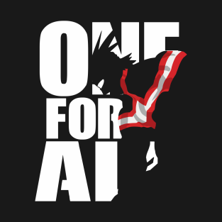

|  | Home | Quem é ele | News | ||
All MightConhecido como o maior herói do universo de My Hero Academia (Boku no Hero Academia), All Might é o grande ídolo de Deku. O grande protetor dos fracos e oprimidos está sempre pronto a enfrentar a vilania que surge pelo mundo. Usando de seu superpoder conhecido como One for All (Um por Todos), ele sempre surge para enfrentar qualquer perigo e salvar o dia. Corpulento e com músculos que saltam aos olhos e que ameaçam seus inimigos, All Might, embora nunca seja possível fitar seus olhos, está sempre com um sorriso no rosto. Já seu colorido uniforme é uma grande homenagem aos tradicionais heróis dos gibis americanos como Batman e Superman. | |||
| Todos Direitos Reservados | |||